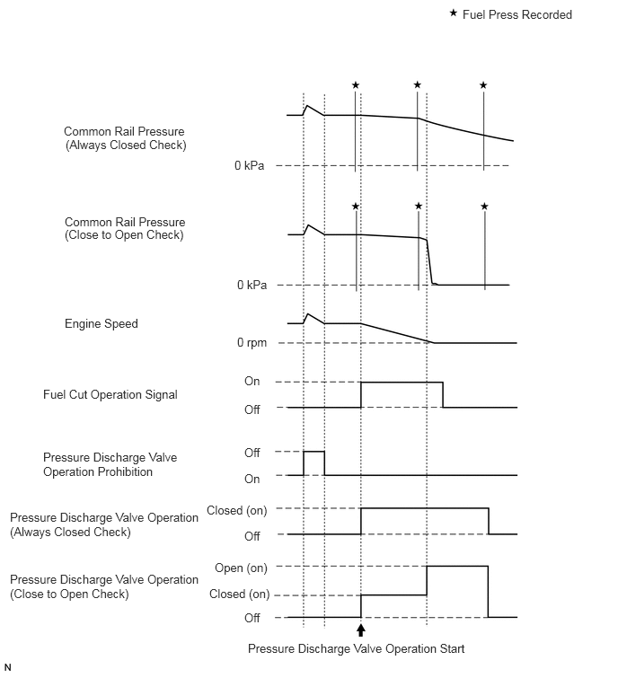

1VD-FTV ENGINE CONTROL ECD SYSTEM(w/ DPF) DATA LIST / ACTIVE TEST
DATA LIST
- HINT:
-
Using the GTS to read the Data List allows the values or states of switches, sensors, actuators and other items to be read without removing any parts. This non-intrusive inspection can be very useful because intermittent conditions or signals may be discovered before parts or wiring is disturbed. Reading the Data List information early in troubleshooting is one way to save diagnostic time.
- NOTICE:
-
In the table below, the values listed under "Normal Condition" are reference values. Do not depend solely on these reference values when deciding whether a part is faulty or not.
Warm up the engine.
Turn the ignition switch off.
Connect the GTS to the DLC3.
Turn the ignition switch to ON.
Start the engine.
Turn the GTS on.
Enter the following menus: Powertrain / Engine and ECT / Data List.
- HINT:
- ·
To display the list box, press the pull down menu button next to "Primary". Then select a measurement group.
·When you select a measurement group, the ECU data belonging to that group is displayed.
- ·
Measurement Group List / Description
·Primary / -
·All Data / All data
·Diesel General
·Engine Control / Engine control system related data
·Common Rail
·Common Rail (All)
·Diesel EGR / EGR system related data
·Diesel Throttle / Diesel throttle system related data
·VN Turbo / VN turbo related data
·Diesel Exhaust / Exhaust system related data
·Diesel Starting / "Difficult to start" related data
·Diesel Rough Idle / "Rough idle" related data
·Diesel Lack of Power / "Lack of power" related data
·Diesel Knocking / "Knocking" relater data
·Diesel Black Smoke / "Black Smoke" related data
·Check Mode / Check mode
·Monitor Status / Monitor status related data
·Ignition / Not Applicable
·Charging Control / Charging control system related data
·Compression / Data used during "Check the Cylinder Compression" Active Test
·Vehicle Information / Vehicle information
Check the values by referring to the table below.
- NOTICE:
-
Normal Condition: If no idling conditions are specified, the shift lever should be in the neutral position, the A/C switch and all accessory switches should be off, and PM forced regeneration should not be being performed.
Various Vehicle Conditions 1 (All Data)
- Powertrain > Engine and ECT > Data List
-
Tester Display Measurement Item Range Normal Condition Diagnostic Note Vehicle Speed Vehicle speed Min.: 0 km/h, Max.: 255 km/h Actual vehicle speed - Target Idle Engine Speed Target idling engine speed Min.: 0 rpm, Max.: 10000 rpm - - Engine Speed Engine speed Min.: 0 rpm, Max.: 6000 rpm ·50 to 400 rpm: Cranking
·500 to 600 rpm: Idling with warm engine
When the crankshaft position sensor is malfunctioning, "Engine Speed" is approximately 0 or varies greatly from the actual engine speed. Calculate Load Load calculated by ECM Min.: 0%, Max.: 100% ·Idling: 3.6 to 35.6%
·Running without load (3000 rpm): 10.0 to 28.0%
Calculated load = (Final injection volume / max. injection volume at current engine speed) x 100. MAF Air flow rate from mass air flow meter sub-assembly Min.: 0 gm/sec, Max.: 400 gm/sec ·Idling: 6 to 30 gm/sec at standard atomospheric pressure
·Running without load (3000 rpm): 76 to 140 gm/sec at standard atomospheric pressure
- HINT:
-
Depends on EGR rate
Based on the MAF, the ECM controls the fuel injection volume, injection timing, EGR, etc. Atmosphere Pressure Atmospheric pressure value Min.: 0 kPa(abs), Max.: 255 kPa(abs) Actual atmospheric pressure ·With the ignition switch ON, when the difference between the atmospheric pressure sensor and intake manifold absolute pressure is 10 kPa or more, there is a malfunction in one of the sensors.
·With the ignition switch ON, when the atmospheric pressure is 0 kPa or 140 kPa, there is a malfunction in the sensor circuit.
·Standard atmospheric pressure: 101 kPa.
·For every 100 m increase in elevation, the pressure drops by 1 kPa.
This varies by weather (high atmospheric pressure, low atmospheric pressure).
MAP Absolute pressure inside intake manifold Min.: 0 kPa, Max.: 320 kPa ·Idling: 67 to 106 kPa at standard atomospheric pressure
·Engine running at 3000 rpm: 100 to 140 kPa at standard atomospheric pressure
- HINT:
-
Depends on barometric pressure and amount of EGR
·When the ignition switch is ON or the vehicle is idling, the intake manifold absolute pressure and atmospheric pressure are approximately the same (standard atmospheric pressure = 101 kPa).
Above approximately 1500 rpm, the turbo becomes effective and the pressure becomes higher than atmospheric pressure.
·Inspect while comparing with "Target Booster Pressure".
·With the accelerator fully open, if the actual manifold absolute pressure (MAP) is low compared to the target booster pressure by at least 20 kPa for 5 seconds or more, a feeling of insufficient power will occur.
Coolant Temp Engine coolant temperature Min.: -40°C, Max.: 140°C After warming up engine: 75 to 90°C (167 to 194°F) ·If the value is -40°C (-40°F) or 140°C (284°F), the sensor circuit is open or shorted.
·After a long soak, the coolant temperature, intake air temperature and ambient temperature are approximately equal.
Intake Air Intake air temperature Min.: -40°C, Max.: 140°C Equivalent to temperature at location of mass air flow meter sub-assembly ·After a long soak, the engine coolant temperature, intake air temperature and ambient temperature are approximately equal.
·If the value is -40°C (-40°F) or 140°C (284°F), the sensor circuit is open or shorted.
Intake Air Temp (Turbo) Supported Intake air temp (Turbo) support Unsupp or Supp Supp ·Supp: The item is supported by the vehicle.
·Unsupp: The monitor is not supported by the vehicle.
Intake Air Temp (Turbo) Intake air temperature after intercooler Min.: -40°C, Max.: 190°C 70°C (158°F) or less ·This is the intake air temperature at the intake manifold (after the intercooler).
·During fail-safe operation, the value is set to 165°C (329°F). As the value is set to a high temperature, the turbo pressure may be suppressed and there may be a lack of power.
Engine Run Time Engine run time Min.: 0 sec., Max.: 65535 sec. Time after the ignition switch turned to ON Time passed since the ignition switch was turned to ON. Initial Engine Coolant Temp Initial engine coolant temperature Min.: -40°C, Max.: 120°C Engine coolant temperature when engine started For freeze frame data, this tells whether the malfunction happened at a cold start or with a warm engine. Initial Intake Air Temp Initial intake air temperature Min.: -40°C, Max.: 120°C Intake air temperature when engine started - Battery Voltage Battery voltage Min.: 0 V, Max.: 15 V 11 to 14 V ·If 11 V or less, characteristics of some electrical components change.
·Symptoms when out of range:
·If 5 V or less, starting becomes difficult
Alternate Duty Ratio Alternator generation duty ratio Min.: 0%, Max.: 100% ·No electrical load at idling:
20 to 60%
·High electrical load at idling:
100%
·This is outputs the alternator generation duty and is used to determine the electrical load.
·Can be used to determine whether a higher-than-normal injection volume at idle, etc. is due to electrical loading or from some other sources. For example, when the duty is not high but the idling injection volume is high, there is injector volume degradation or high engine friction.
·Can be used for judging whether or not a malfunctioning component in the electrical system is generating continual generation requests (e.g., battery deterioration is causing an unending full recharge request, etc.). Regardless of whether or not an auxiliary device such as the A/C or heater is active, if the alternator duty is always at the maximum value, there is an electrical system abnormality, such as battery deterioration.
Glow Relay Request Status of the glow relay request ON or OFF - - Glow Relay Request #2 Status of the glow2 relay request ON or OFF - - Glow Indicator Supported Glow indicator support Unsupp or Supp Supp ·Supp: The item is supported by the vehicle.
·Unsupp: The monitor is not supported by the vehicle.
Glow Indicator Status of the glow indicator ON or OFF - - Accel Position Accelerator position status Min.: 0%, Max.: 100% ·Accelerator pedal released:
0%
·Accelerator pedal fully depressed:
100%
·"Accel Position" is the accelerator opening amount (%) for engine control use.
·When the accelerator pedal position sensor output itself (Accel Sens. No. 1 Volt %, Accel Sens. No. 2 Volt %) is in the normal range, another actuator malfunction has caused the fail-safe function to restrict the accelerator.
·Without cruise, ECT or VSC requests, and without accelerator restriction by the fail-safe function, this is adjusted in proportion to the amount the accelerator pedal is depressed by the driver.
·Accelerator pedal released: 0%
·Accelerator pedal fully depressed: 100%
Accel Sens. No.1 Volt % Accelerator position No. 1 Min.: 0%, Max.: 100% ·Accelerator pedal released:
10 to 22%
·Accelerator pedal fully depressed:
52 to 90%
Read value with ignition switch ON (do not start engine).
- HINT:
-
This is used only for diagnosing malfunctions in the accelerator pedal position sensor. Under normal conditions, it is sufficient to only check the final accelerator opening angle value "Accel Position".
Accel Sens. No.2 Volt % Accelerator position No. 2 Min.: 0%, Max.: 100% ·Accelerator pedal released:
24 to 40%
·Accelerator pedal fully depressed:
68 to 99%
Read value with ignition switch ON (do not start engine).
- HINT:
-
This is used only for diagnosing malfunctions in the accelerator pedal position sensor. Under normal conditions, it is sufficient to only check the final accelerator opening angle value "Accel Position".
Diesel Throttle System
- Powertrain > Engine and ECT > Data List
-
Tester Display Measurement Item Range Normal Condition Diagnostic Note Target Throttle Position Supported Target throttle position support Unsupp or Supp Supp ·Supp: The item is supported by the vehicle.
·Unsupp: The monitor is not supported by the vehicle.
Target Throttle Position Target throttle position Min.: -128%, Max.: 127% ·Throttle valve fully closed: 0%
·Throttle valve fully opened: 100%
If there is a malfunction of the throttle actuator, compare the target and actual throttle position values for troubleshooting. Target Throttle Position #2 Supported Target throttle position (No. 2) support Unsupp or Supp Supp ·Supp: The item is supported by the vehicle.
·Unsupp: The monitor is not supported by the vehicle.
Target Throttle Position #2 Target No. 2 throttle position Min.: -128%, Max.: 127% ·Throttle valve fully closed: 0%
·Throttle valve fully opened: 100%
If there is a malfunction of the throttle actuator, compare the target and actual throttle position values for troubleshooting. Actual Throttle Position Supported Actual throttle position support Unsupp or Supp Supp ·Supp: The item is supported by the vehicle.
·Unsupp: The monitor is not supported by the vehicle.
Actual Throttle Position Actual throttle position Min.: -20%, Max.: 120% Idling after engine warmed up: 5 to 100% Closing percentage of the throttle valve.
·Fully closed: 0%.
·Fully open: 100%.
- HINT:
-
There is no connection with the accelerator. However, under full load, the throttle is usually fully open (100%).
Symptoms when out of range:
·Stuck closed: Engine stall, difficult to start, lack of power, black smoke, rough idle
·Stuck open: Loud turbocharging sound, bad vibration when engine is stopped
·When ECM detects a malfunction of the diesel throttle (MIL on), engine power is restricted so that the vehicle can drive with a maximum speed of 80 to 100 km/h.
Actual Throttle Position #2 Supported Actual No. 2 throttle position support Unsupp or Supp Supp ·Supp: The item is supported by the vehicle.
·Unsupp: The monitor is not supported by the vehicle.
Actual Throttle Position #2 Actual No. 2 throttle position Min.: -20%, Max.: 120% Idling after engine warmed up: 5 to 100% - Throttle Motor DUTY Throttle motor duty Min.: 0%, Max.: 100% - When the moving force to open and close the diesel throttle valve increases, the value of the Throttle Motor Duty increases. Throttle Motor DUTY #2 Throttle motor duty Min.: 0%, Max.: 100% - When the moving force to open and close the diesel throttle valve increases, the value of the Throttle Motor Duty #2 increases. Throttle Close Learning Val. Throttle fully closed position learned value (bank 1) Min.: 0 deg, Max.: 84 deg 14 to 22 deg ·When the ignition switch is turned from ON to off and 5 seconds elapse, learning of "Throttle Close Learning Val." will be complete.
·When "Throttle Close Learning Val." is outside of the normal range, a foreign object may lodged in the throttle valve.
·If the value is stuck at the upper limit of 21.25 deg, there is a chance that a malfunction is present.
However, as the initial value for the learned value is 21.25 deg, it is necessary to check the value after learning is completed.
Throttle Close Learning Val.#2 Throttle fully closed position learned value (bank 2) Min.: 0 deg, Max.: 84 deg 14 to 22 deg ·When the ignition switch is turned from ON to off and 5 seconds elapse, learning of "Throttle Close Learning Val. #2" will be complete.
·When "Throttle Close Learning Val. #2" is outside of the normal range, a foreign object may lodged in the throttle valve.
·If the value is stuck at the upper limit of 21.25 deg, there is a chance that a malfunction is present.
However, as the initial value for the learned value is 21.25 deg, it is necessary to check the value after learning is completed.
Throttle Sensor Volt % Absolute throttle position sensor (bank 1) Min.: 0%, Max.: 100% ·Ignition switch ON: 60 to 100%
·Warmed up and idling: 16 to 100%
·Throttle position sensor output voltage is converted using 5 V = 100%.
·When fully closed: 20%.
·When fully open: 82%.
·When the ignition switch is turned from off to ON, the throttle valve fully opens once.
·When the ignition switch is turned from ON to off, the throttle valve fully closes once.
Symptoms when out of range:
·Stuck closed: Engine stall, difficult to start, rough idling, lack of power, black smoke, white smoke
·Stuck open: Loud turbocharging sound, bad vibration when engine is stopped
·When the ECM detects a malfunction with the diesel throttle (MIL on), engine power is restricted but city driving is possible.
Throttl Sensor #2 Volt % Absolute throttle position sensor (bank 2) Min.: 0%, Max.: 100% ·Ignition switch ON: 60 to 100%
·Warmed up and idling: 8 to 100%
·Throttle position sensor output voltage is converted using 5 V = 100%.
·When fully closed: 20%.
·When fully open: 82%.
·When the ignition switch is turned from off to ON, the throttle valve fully opens once.
·When the ignition switch is turned from ON to off, the throttle valve fully closes once.
Symptoms when out of range:
·Stuck closed: Engine stall, difficult to start, rough idling, lack of power, black smoke, white smoke
·Stuck open: Loud turbocharging sound, bad vibration when engine is stopped
·When the ECM detects a malfunction with the diesel throttle (MIL on), engine power is restricted but city driving is possible.
Diesel Injection System
- Powertrain > Engine and ECT > Data List
-
Tester Display Measurement Item Range Normal Condition Diagnostic Note Injection Volume Injection volume Min.: 0 mm3/st, Max.: 1279.98 mm3/st Idling: 2 to 10 mm3/st ·Injection amount for each combustion.
·If injector assemblies are clogged fuel quality is poor, the fuel filter element sub-assembly is clogged, or engine friction increases, "Injection Volume" will increase.
·If there is a malfunction due to low turbocharger pressure or a low intake air volume, the injection volume is limited and there is a lack of power.
Inj. FB Vol. for Idle Idle stability status integral control volume Min.: -80 mm3/st, Max.: 79 mm3/st -7.0 to 10 mm3/st ·When the actual engine speed does not match the target idling speed, this corrects the injection volume.
If this item displays 10 mm3/st or more or -10 mm3/st or less even with the engine completely warmed up and the air conditioning and other electrical loads off, the internal parts of the engine may be damaged, or the fuel injection system or other auxiliary components may be malfunctioning.
·Only calculated and reflected at idle.
Inj Vol Feedback Learning Injection volume feedback learning value Min.: -10 mm3/st, Max.: 9.92 mm3/st - - Idle Signal Output Value Idle Signal Output Value (Bank 1) ON or OFF ·ON: Idling
·OFF: Not idling
·Piezo injector creates a large amount of operation noise when idling. To reduce the noise level, this item lowers driving energy when idling. This item displays the value for controlling driving energy.
·If the fuel injector is not a Piezo injector, the value will be always "OFF".
·If the display does not match the vehicle condition, DTC P1626, P1627, P1629 and P162A will be stored.
Idle Signal Output Value #2 Idle Signal Output Value (Bank 2) ON or OFF ·ON: Idling
·OFF: Not idling
·Piezo injector creates a large amount of operation noise when idling. To reduce the noise level, this item lowers driving energy when idling. This item displays the value for controlling driving energy.
·If the fuel injector is not a Piezo injector, the value will be always "OFF".
·If the display does not match the vehicle condition, DTC P1626, P1627, P1629 and P162A will be stored.
Injection Feedback Val #1 Injection volume correction for No. 1 fuel injector Min.: -10 mm3/st, Max.: 10 mm3/st Idling: -3.0 to 3.0 mm3/st ·When idling after warmup, the injection amount for each cylinder is corrected to optimize the difference between the engine speed of each cylinder.
Example: For cylinders that are slowing the engine speed compared to other cylinders, the injection volume is increased.
·"Injection Feedback Val" more than 3.0 mm3/st: Injector breakdown is causing injection volume deviation, or insufficient compression is causing poor combustion.
·Even if "Injection Feedback Val" for a cylinder is less than -3.0 mm3/st, the cylinder with this value does not necessarily have a problem.
- HINT:
- ·
The ECM adjusts each cylinder so that the average "Injection Feedback Val" of the 4 cylinders is approximately 0 mm3/st.
·If more than one cylinder has a positive correction value, a normal cylinder may have a value less than -3.0 mm3/st.
Injection Feedback Val #2 Injection volume correction for No. 2 fuel injector Min.: -10 mm3/st, Max.: 10 mm3/st Idling: -3.0 to 3.0 mm3/st Same as Injection Feedback Val #1 Injection Feedback Val #3 Injection volume correction for No. 3 fuel injector Min.: -10 mm3/st, Max.: 10 mm3/st Idling: -3.0 to 3.0 mm3/st Same as Injection Feedback Val #1 Injection Feedback Val #4 Injection volume correction for No. 4 fuel injector Min.: -10 mm3/st, Max.: 10 mm3/st Idling: -3.0 to 3.0 mm3/st Same as Injection Feedback Val #1 Injection Feedback Val #5 Injection volume correction for No. 5 fuel injector Min.: -10 mm3/st, Max.: 10 mm3/st Idling: -3.0 to 3.0 mm3/st Same as Injection Feedback Val #1 Injection Feedback Val #6 Injection volume correction for No. 6 fuel injector Min.: -10 mm3/st, Max.: 10 mm3/st Idling: -3.0 to 3.0 mm3/st Same as Injection Feedback Val #1 Injection Feedback Val #7 Injection volume correction for No. 7 fuel injector Min.: -10 mm3/st, Max.: 10 mm3/st Idling: -3.0 to 3.0 mm3/st Same as Injection Feedback Val #1 Injection Feedback Val #8 Injection volume correction for No. 8 fuel injector Min.: -10 mm3/st, Max.: 10 mm3/st Idling: -3.0 to 3.0 mm3/st Same as Injection Feedback Val #1 Pilot 1 Injection Period Pilot 1 injection period Min.: 0 μs, Max.: 65535 μs Idling: 132 to 264 μs Check to see if "Pilot 1 Injection Period" is not zero when symptoms occur. Pilot 2 Injection Period Pilot 2 injection period Min.: 0 μs, Max.: 65535 μs Idling: 132 to 479 μs Check to see if "Pilot 2 Injection Period" is not zero when symptoms occur. Main Injection Period Main injection period Min.: 0 μs, Max.: 65535 μs - ·When the common rail pressure becomes 15000 kPa or less, "Main Injection Period" is set to 0.
·When the engine will not start, confirm that injection is performed.
·When P0093, P0627, P062D or P062E is stored, there is an engine stall request. At that time, "Main Injection Period" equals 0.
- HINT:
-
As the engine stalls 1 minute after the MIL illuminates, freeze frame data cannot be checked.
After Injection Period After injection period Min.: 0 μs, Max.: 65535 μs - Check to see if "After Injection Period" is not zero when the following symptoms occur:
Black smoke, poor driveability.Pilot 1 Injection Timing Pilot 1 injection timing Min.: -70 deg(CA), Max.: 20 deg(CA) Idling after engine warmed up and vehicle under normal atmospheric pressure: 10.8 to 6.8 deg(CA) ·Negative values indicate values after top dead center (ATDC).
·Positive values indicate values before top dead center (BTDC).
Pilot 2 Injection Timing Pilot 2 injection timing Min.: -50 deg(CA), Max.: 20 deg(CA) Idling after engine warmed up and vehicle under normal atmospheric pressure: 6.0 to 1.5 deg(CA) ·Negative values indicate values after top dead center (ATDC).
·Positive values indicate values before top dead center (BTDC).
Main Injection Timing Main injection timing Min.: -90 deg(CA), Max.: 90 deg(CA) Idling after engine warmed up and vehicle is under normal atmospheric pressure: 2.0 to -2.5 deg(CA) ·Negative values indicate values after top dead center (ATDC).
·Positive values indicate values before top dead center (BTDC).
After Injection Timing After injection timing Min.: -10 deg(CA), Max.: 50 deg(CA) - ·Negative values indicate values after top dead center (ATDC).
·Positive values indicate values before top dead center (BTDC).
Pilot Quantity Learning State of "Pilot Quantity Learning" Standby, Wait, Learn, Stop, Comple - ·The status is only displayed while performing "Pilot Quantity Learning".
·If "Pilot Quantity Learning" is incomplete, the MIL illuminates and DTC P062F is stored.
Injector Pilot Quantity Learning Status of the injector pilot quantity learning Ready or NG - - Actuator Pilot Quantity Learning Status of the actuator pilot quantity learning Ready or NG - - Temperature Pilot Quantity Learning Status of the temperature pilot quantity learning Ready or NG - - Catalyst Pilot Quantity Learning Status of the catalyst pilot quantity learning Ready or NG - - Injection Pressure Correction Injection pressure feedback compensation volume Min.: -640 mm3/st, Max.: 639.98 mm3/st -20 to 20 mm3/st at standard temperature ·When the (actual) common rail pressure is equal to the target common rail pressure, this value becomes 0.
·This indicator can be used for diagnosing fuel supply pump assembly related malfunctions.
·When this value (absolute value) is large, it indicates that the difference between the actual and target common rail pressure is also large.
·A positive value indicates that the pressure feed is being increased due to insufficient pressure. A negative value indicates that pressure is being reduced due to excessive rail pressure.
·When the pre-stroke control valve is malfunctioning, it causes rail overpressure, and this value slips to the negative volume side.
·Injection Pressure Correction displays the value calculated by the ECM.
Injection EDU Relay Request Status of the EDU 1 relay request (Bank 1) ON or OFF ON: EDU relay ON - Injection EDU Relay Request #2 Status of the EDU 2 relay request (Bank 2) ON or OFF ON: EDU relay ON - Target Common Rail Pressure Supported Target common rail pressure support Unsupp or Supp Supp ·Supp: The item is supported by the vehicle.
·Unsupp: The monitor is not supported by the vehicle.
Target Common Rail Pressure Target common rail pressure Min.: 0 kPa(abs), Max.: 250000 kPa(abs) 25000 to 200000 kPa ·Inspect the (actual) common rail pressure, comparing it with the common rail target value.
·Considered normal when the actual common rail pressure is within 5000 kPa of the target common rail pressure under stable conditions when idling after warm up the engine.
Common Rail Pressure Supported Common rail pressure support Unsupp or Supp Supp ·Supp: The item is supported by the vehicle.
·Unsupp: The monitor is not supported by the vehicle.
Common Rail Pressure Actual common rail pressure Min.: 0 kPa(abs), Max.: 250000 kPa(abs) Idling: 27000 to 45000 kPa ·Common Rail Pressure is the actual common rail common rail pressure.
·Inspect by comparing the common rail pressure with the target common rail pressure.
·When in a stable condition such as when idling after warm up the engine, the common rail pressure is within 5000 kPa of the target common rail pressure.
·The ECM uses common rail pressure for feedback control of the target common rail pressure via the fuel supply pump assembly.
The injection amount is determined based on the injection timing and common rail pressure.
Also, the spray pattern is selected based on the common rail pressure.
·For startup, at least 25000 kPa of common rail pressure is needed (take care as there is a response lag when the pressure rises).
·When the common rail pressure is below 25000 kPa, it may cause rough idling.
·When the common rail pressure has decreased by 20000 kPa from the target common rail pressure, there may be a lack of power.
·If actual common rail pressure is 5000 kPa higher than the target common rail pressure, P1229 will be stored. When the actual common rail pressure is lower than the target common rail pressure, "P1608 Lack of Power" may be detected depending on the degree of deviation from the target pressure.
·When the common rail pressure is higher than 250000 kPa, DTC P0088 will be stored.
Fuel Temperature Supported Fuel temperature support Unsupp or Supp Supp ·Supp: The item is supported by the vehicle.
·Unsupp: The monitor is not supported by the vehicle.
Fuel Temperature Fuel temperature Min.: -40°C, Max.: 140°C Actual fuel temperature After fully cold soaking the engine, the fuel temperature is the same as the outside air temperature. Target Pump SCV Current Final pump current target value Min.: 0 mA, Max.: 4000 mA Idling: 800 to 1207 mA ·ECU-calculated value for the suction control valve actuation target current.
·Value is large when a high common rail pressure is desired.
·Normally, the value is between 800 and 2500 mA.
·If the value is stuck at 3000 mA or higher, it indicates that the operation is poor (poor movement due to deposits, etc.).
·When this deviates from the standard value, it indicates that for some reason, even though the pump is running hard, the actual common rail pressure is inconsistent with the target common rail pressure.
Pump SCV Learning Value Pump SCV learning value Min.: -4096 mA, Max.: 4095.8 mA ·Min.: -200 mA
·Max.: 200 mA
If the value is stuck at 200 mA or higher or -200 mA or less, it indicates that the operation is poor (poor movement due to deposits, etc.). Pump SCV Status Pump SCV Status ON or OFF - - Pump SCV Duty Request Pump SCV duty request Min.: 0 %, Max.: 39.9 % - - Pressure Discharge Valve Pressure discharge valve operation ON or OFF ON: Pressure discharge valve open This is the ECM command.
Diesel Exhaust
- Powertrain > Engine and ECT > Data List
-
Tester Display Measurement Item Range Normal Condition Diagnostic Note AF Lambda B1S1 Lambda equivalent ratio/ Min.: 0, Max.: 255 ·AF Lambda B1S1 = air fuel ratio / 14.5 (Stoichiometric air fuel ratio)
·Value less than 1 (0.000 to 0.999): Rich
·Value more than 1 (1.001 to 255): Lean
·Air fuel ratio = intake air mass / (main fuel injection and exhaust fuel addition injection mass)
·Check the air fuel ratio sensor output with the exhaust gas temperature (Exhaust Temperature B1S2) at 200°C (392°F) or higher (example: driving at speed of 50 km/h (31 mph) or more in 3rd gear).
·If the exhaust fuel addition injector assembly is clogged, the AF Lambda B1S1 value changes according to engine combustion, but large changes due to the addition of fuel are not seen even when PM forced regeneration is performed with the GTS.
·Furthermore, if the main injectors become clogged, the AF Lambda B1S1 value will increase under all circumstances while the engine is running (the value increases regardless of whether the PM forced regeneration has been performed).
Cause of Out of Range:
·Air fuel ratio sensor
·Air fuel ratio sensor circuit
·Fuel injector clogged
AFS Voltage B1S1 Air fuel ratio sensor output voltage Min.: 0 V, Max.: 7.99 V - ·Check the air fuel ratio sensor output with the exhaust gas temperature (Exhaust Temperature B1S2) at 200°C (392°F) or higher (example: driving at speed of 50 km/h (31 mph) or more in 3rd gear).
·If the exhaust fuel addition injector assembly is clogged, the AFS voltage B1S1 value changes according to engine combustion, but large changes due to the addition of fuel are not seen even when PM forced regeneration is performed with the GTS.
Cause of Out of Range:
·Air fuel ratio sensor
·Air fuel ratio sensor circuit
·Fuel injector clogged
AFS Current B1S1 Air fuel ratio sensor current Min.: -128 mA, Max.: 127.99 mA - ·Check the air fuel ratio sensor output with the exhaust gas temperature (Exhaust Temperature B1S2) at 200°C (392°F) or higher (example: driving at speed of 50 km/h (31 mph) or more in 3rd gear).
·If the exhaust fuel addition injector assembly is clogged, even if PM forced regeneration is performed with the GTS, the AFS voltage B1S1 value will not change.
Cause of Out of Range:
·Air fuel ratio sensor
·Air fuel ratio sensor circuit
·Fuel injector clogged
A/F Heater Duty B1S1 Air fuel ratio sensor heater duty ratio Min.: 0%, Max.: 399.9% - When the value is any value except 0%, current is being supplied to the heater. AF Sensor Learning Value Air fuel ratio sensor learning value Min.: 0 V, Max.: 5 V - Inspect the air fuel ratio sensor performance. Exhaust Temperature B1S1 Supported Status of exhaust gas temperature B1S1 supported Supp or Unsupp Supp If this item displays "Unsupp", a fixed value is displayed for "Exhaust Temperature B1S1", as exhaust gas temperature sensors are not equipped on the vehicle. Exhaust Temperature B1S1 Exhaust gas temperature of DOC catalyst Min.: -40°C, Max.: 1000°C ·Idling after engine warmed up: 50 to 200°C (122 to 392°F)
·During PM forced regeneration: 100 to 300°C (212 to 572°F)
·If an open occurs in an exhaust temperature sensor circuit, 0°C (32°F) is displayed on the GTS.
·If a short occurs in an exhaust temperature sensor circuit, 1000°C (1832°F) is displayed on the GTS.
Cause of Out of Range:
·Exhaust gas temperature sensor
·DPF catalyst deteriorated
Exhaust Temperature B1S2 Supported Status of exhaust gas temperature B1S2 supported Supp or Unsupp Supp If this item displays "Unsupp", a fixed value is displayed for "Exhaust Temperature B1S2", as No. 2 exhaust gas temperature sensors are not equipped on the vehicle. Exhaust Temperature B1S2 No. 2 exhaust gas temperature of upstream of the DPF catalyst Min.: -40°C, Max.: 1000°C ·Idling after engine warmed up: 50 to 250°C (122 to 482°F)
·During PM forced regeneration: 500 to 700°C (932 to 1292°F)
·If an open occurs in an No. 2 exhaust temperature sensor circuit, 0°C (32°F) is displayed on the GTS.
·If a short occurs in an No. 2 exhaust temperature sensor circuit, 1000°C (1832°F) is displayed on the GTS.
Cause of Out of Range:
·No. 2 exhaust gas temperature sensor
·DPF catalyst deteriorated
Exhaust Temperature B1S3 Supported Status of exhaust gas temperature B1S3 supported Supp or Unsupp Supp If this item displays "Unsupp", a fixed value is displayed for "Exhaust Temperature B1S3", as No. 3 exhaust gas temperature sensors are not equipped on the vehicle. Exhaust Temperature B1S3 No. 3 exhaust gas temperature of downstream of the DPF catalyst Min.: -40°C, Max.: 1000°C ·Idling after engine warmed up: 50 to 250°C (122 to 482°F)
·During PM forced regeneration: 500 to 700°C (932 to 1292°F)
·If an open occurs in an No. 3 exhaust temperature sensor circuit, 0°C (32°F) is displayed on the GTS.
·If a short occurs in an No. 3 exhaust temperature sensor circuit, 1000°C (1832°F) is displayed on the GTS.
Cause of Out of Range:
·No. 3 exhaust gas temperature sensor
·DPF catalyst deteriorated
DPF Differential Pressure Supported DPF differential pressure supported Supp or Unsupp Supp ·Supp: The item is supported by the vehicle.
·Unsupp: The monitor is not supported by the vehicle.
DPF Differential Pressure DPF differential pressure Min.: -5 kPa, Max.: 100 kPa Idling: Approximately 0 kPa ·When PM (Particulate Matter) builds up in the DPF catalyst, the "DPF Differential Pressure" value increases.
·At 3000 rpm (no load), if Catalyst Differential Press is more than 0.45, the DPF catalyst has become blocked.
Cause of Out of Range:
·DPF catalytic converter
·Differential pressure sensor assembly
·Vacuum pipe clogged
·Air hose clogged
Catalyst Differential Press Amount of clogging in catalyst Min.: -3.9998, Max.: 3.9998 0.56 or less ·Diagnosis is possible when the MAF reading is between 30 and 140 gm/sec.
·When the air intake volume is very low, such as when idling, due to excessive pressure fluctuation the correct values will not be displayed.
·Catalyst Differential Press is the DPF Differential Pressure corrected in response to the MAF and other values.
·If the DPF catalyst is clogged, the "Catalyst Differential Press" value increases.
·When the difference in pressure is more than 0.45, DTC P244B is stored and "DPF PM Block" displays "Blocked".
Symptoms when out of range:
·If the difference in pressure increases, a decrease in engine power may be felt.
·If an abnormal difference in pressure is detected, engine power is limited to protect the engine and catalyst.
Diff. Press. Sensor Corr. Differential pressure sensor assembly 0 point learned value Min.: -10 kPa, Max.: 245.9 kPa Ignition switch ON (engine stopped): - 1.5 to 1.5 kPa ·This number indicates the correction value (0 point calibration) for compensation of variance in the differential pressure sensor.
·If the value of DPF Differential Pressure does not approach 0 kPa when the ignition switch is ON (engine is stopped) and the Diff. Press. Sensor Corr. displays less than -1.5 kPa, or higher than 1.5 kPa, there may be a malfunction in the differential pressure sensor.
·Note that the output of the differential pressure sensor assembly fluctuates depending on the temperature.
Cause of Out of Range:
Differential pressure sensorExhaust Fuel Addition Injector Status Status of the exhaust fuel addition injector ON or OFF ON: Exhaust fuel addition injector assembly operating - Exhaust Fuel Addition FB Exhaust fuel addition correction value Min.: -256, Max.: 255.99 0.9 to 1.45 ·Usually Exhaust Fuel Addition FB is between 0.8 and 1.45.
·Exhaust Fuel Addition FB is a correction value to increase the fuel volume injected from the exhaust fuel addition injector assembly when the catalyst temperature does not rise to the target range during PM forced regeneration.
·If the correction value is more than 1.45, a clog in the exhaust fuel addition injector assembly or fuel filter element assembly may be causing a reduction in injection volume or a problem with the engine (injector assemblies, EGR, etc.) where the exhaust gas temperature decreases may be present. As a result, the catalyst temperature does not rise properly causing the catalyst to deteriorate.
Cause of Out of Range:
·Exhaust fuel addition injector assembly clogged
·DPF catalytic converter deteriorated
DPNR/DPF Status Reju(PM) PM forced regeneration status Standby, Ready, Operate, Compl During PM forced regeneration: Operate The status is only displayed while performing "Activate the DPF Rejuvenate (PM)".
·Standby
Before entering "Activate the DPF Rejuvenate (PM)".
·Ready
Enabling condition for "Activate the DPF Rejuvenate (PM)" is not met.
·Operate
PM forced regeneration is being performed.
If "Activate the DPF Rejuvenate (PM)" does not finish completely, the status turns to Ready.
If "Activate the DPF Rejuvenate (PM)" finishes completely, the status turns to Compl.
·Compl
PM forced regeneration is completed.
PM Accumulation Ratio PM accumulation ratio Min.: 0%, Max.: 510% - ·When PM forced regeneration is necessary, 100% is displayed for PM Accumulation Ratio.
·If the ratio exceeds 100%, PM forced regeneration will be performed automatically
EGR System
- Powertrain > Engine and ECT > Data List
-
Tester Display Measurement Item Range Normal Condition Diagnostic Note Target EGR Valve Pos Supported Target EGR valve pos support Unsupp or Supp Supp ·Supp: The item is supported by the vehicle.
·Unsupp: The monitor is not supported by the vehicle.
Target EGR Valve Pos EGR valve target opening amount Min.: 0%, Max.: 100% Idling after engine warmed up: 0 to 80% ·Fully closed: 0%.
·Fully open: 100%.
·Used for comparison to "Actual EGR Valve Pos.".
Symptoms when out of range:
·When value is out of range and approaching 0%: mass air flow meter degradation, intake or exhaust system blockage
·When value is out of range and approaching 100%: EGR pipe blockage
Target EGR Valve Pos #2 Supported Target EGR valve pos #2 support Unsupp or Supp Unsupp ·Supp: The item is supported by the vehicle.
·Unsupp: The monitor is not supported by the vehicle.
Target EGR Valve Pos #2 No. 2 EGR valve target opening amount Min.: 0%, Max.: 100% - - Actual EGR Valve Pos Supported Actual EGR valve pos support Unsupp or Supp Supp ·Supp: The item is supported by the vehicle.
·Unsupp: The monitor is not supported by the vehicle.
Actual EGR Valve Pos EGR valve position Min.: 0%, Max.: 100% Idling after engine warmed up: 0 to 83% ·Fully closed: 0%.
·Fully open: 100%.
·Inspect while comparing to "Target EGR Valve Pos".
·Check the valve movement via the Active Test.
·Sometimes malfunctions only occur around a certain temperature, so refer to the engine coolant temperature and outside temperature at the time the malfunction occurred.
Symptoms when out of range:
·EGR valve stuck open: Poor starts (engine does not stop), black smoke, white smoke, lack of power
·EGR valve stuck closed: Increased turbo booster noise
Actual EGR Valve Pos #2 Supported Actual EGR valve pos #2 support Unsupp or Supp Unsupp ·Supp: The item is supported by the vehicle.
·Unsupp: The monitor is not supported by the vehicle.
Actual EGR Valve Pos #2 No. 2 EGR valve position Min.: 0%, Max.: 100% - - EGR Position Sensor EGR position sensor Min.: 0 V, Max.: 4.999 V Idling after engine warmed up: 1.06 to 3.58% Displays the output voltage of the EGR valve position sensor. EGR Motor Duty #1 EGR valve actuation duty Min.: 0%, Max.: 127.5% Idling after engine warmed up: 0 to 100% ·To 0%: Close side EGR valve actuation.
·To 100%: Open side EGR valve actuation.
·When this value is large but the actual valve position does not reach the target valve position, there is an unable to open malfunction.
EGR Close Lrn. Val. EGR fully closed position learned value Min.: 0 V, Max.: 5 V 0.54 to 0.81 V ·This value is the EGR position sensor output voltage.
·When the value is at the upper or lower limit of the normal range, it is possible that a foreign object is lodged in the EGR valve seat area.
·As the lower and upper limits are 0 V to 1 V respectively, if the value becomes stuck at either of these values, there is a malfunction in the lift sensor or the valve position may be misaligned (foreign matter is present, etc.).
EGR Cooler Bypass VSV Status of the Vacuum Switching Valve Assembly (for EGR Bypass Valve) ON or OFF ·ON: Vacuum switching valve assembly (for EGR Bypass Valve) is ON
·OFF: Vacuum switching valve assembly (for EGR Bypass Valve) is OFF
·When Vacuum Switching Valve Assembly (for EGR Bypass Valve) is ON, the value for EGR Cooler Bypass Position is Cooler and, when Vacuum Switching Valve Assembly (for EGR Bypass Valve) is OFF, the value for EGR Cooler Bypass Position is Bypass.
·The Vacuum Switching Valve Assembly (for EGR Bypass Valve) is controlled by the ECM and the vacuum switching valve assembly (for EGR Bypass Valve) is opened and closed by the vacuum created by the vacuum pump.
EGR Cooler Bypass Position Status of the EGR Cooler Bypass Position Cooler or Bypass ·Cooler: Vacuum Switching Valve Assembly (for EGR Bypass Valve) is "ON"
·Bypass: Vacuum Switching Valve Assembly (for EGR Bypass Valve) is "OFF"
·When Vacuum Switching Valve Assembly (for EGR Bypass Valve) is ON, the value for EGR Cooler Bypass Position is Cooler and, when Vacuum Switching Valve Assembly (for EGR Bypass Valve) is OFF, the value for EGR Cooler Bypass Position is Bypass.
·The Vacuum Switching Valve Assembly (for EGR Bypass Valve) is controlled by the ECM and the vacuum switching valve assembly (for EGR Bypass Valve) is opened and closed by the vacuum created by the vacuum pump.
VN Turbo System
- Powertrain > Engine and ECT > Data List
-
Tester Display Measurement Item Range Normal Condition Diagnostic Note Target Booster Pressure Supported Target booster pressure support Unsupp or Supp Supp ·Supp: The item is supported by the vehicle.
·Unsupp: The monitor is not supported by the vehicle.
Target Booster Pressure Target booster pressure Target booster pressure/Min.: 0 kPa, Max.: 320 kPa Driving vehicle on level surface at 3000 rpm with full load: 170 to 190 kPa ·Inspect while comparing with "MAP".
·With the accelerator fully open, if the actual manifold absolute pressure (MAP) is low compared to the target booster pressure by at least 20 kPa for 5 second or more, a feeling of a lack of power will occur.
·When the vehicle is driven with the engine speed at 3000 rpm or more and the accelerator pedal fully depressed, "MAP" is approximately equal to "Target Booster Pressure".
Target VN Turbo Position Supported VN turbo position supported Unsupp or Supp Supp ·Supp: The item is supported by the vehicle.
·Unsupp: The monitor is not supported by the vehicle.
Target VN Turbo Position Target VN turbo position Min.: 0%, Max.: 100% - - Target VN Turbo Position #2 Supported VN turbo position #2 supported Unsupp or Supp Unsupp ·Supp: The item is supported by the vehicle.
·Unsupp: The monitor is not supported by the vehicle.
Target VN Turbo Position #2 Target No. 2 VN turbo position Min.: 0%, Max.: 100% - - Actual VN Position Supported Actual VN position supported Unsupp or Supp Unsupp ·Supp: The item is supported by the vehicle.
·Unsupp: The monitor is not supported by the vehicle.
Actual VN Turbo Position Actual VN turbo position Min.: 0%, Max.: 100% - - Actual VN Position #2 Supported Actual VN position #2 supported Unsupp or Supp Unsupp ·Supp: The item is supported by the vehicle.
·Unsupp: The monitor is not supported by the vehicle.
Actual VN Turbo Position #2 Actual No. 2 VN turbo position Min.: 0%, Max.: 100% - - VN Motor Duty VN turbo motor duty Min.: 0%, Max.: 127.5% - - VN Turbo Type VN turbo type Not Avl, Commo, Vacuum, CAN Com, DC Vacuum Indicates the VN turbo vane actuation method.
·DC motor system.
·Negative-pressure diaphragm system.
·Step motor system.
VN Turbo Max Angle VN turbo maximum opening amount Min.: 0%, Max.: 100% - ·The maximum vane opening amount is displayed in %.
·The VN turbo is operated between VN Turbo Max Angle and VN Turbo Min Angle when the Test the Turbo Charger Step Motor Active Test is performed.
VN Turbo Min Angle VN turbo minimum opening amount Min.: 0%, Max.: 100% - ·The maximum vane opening amount is displayed in %.
·The VN turbo is operated between VN Turbo Max Angle and VN Turbo Min Angle when the Test the Turbo Charger Step Motor Active Test is performed.
Various Vehicle Conditions 2 (All Data)
- Powertrain > Engine and ECT > Data List
-
Tester Display Measurement Item Range Normal Condition Diagnostic Note Starter Signal Starter signal ON or OFF ON: Cranking Starter Signal condition:
·ON: Starter is operating
·OFF: Starter is not operating
Cause of Out of Range:
·OFF malfunction (ignition switch (STA) is ON but the signal is OFF and the starter is operating): Wire harness is open or shorted to ground
·ON malfunction (ignition switch (STA) is off but the signal is ON and the starter is not operating): Wire harness is shorted to +B
·Operation malfunction: ignition switch malfunction, starter relay malfunction, starter malfunction, battery or battery cable is defective, or wire harness is open or shorted
Symptoms when out of range:
·Ignition switch is ON but the starter does not operate: Starting is not possible
·Ignition switch is off but the starter continues to operate: STA signal malfunction (P0617) is stored
Power Steering Signal Power steering switch signal ON or OFF - - Low Gear Switch First position switch ON or OFF ON: First position - Clutch Switch Clutch switch ON or OFF ON: Clutch pedal depressed When OFF with the clutch pedal depressed, the engine does not start. Transfer L4 L4 status of the transfer ON or OFF ON: 4WD control switch in 4L position - Stop Light Switch Stop light switch ON or OFF ·ON: Brake pedal depressed
·OFF: Brake pedal released
Stop light switch (STP) operation condition:
·ON: Light is on (Brake pedal is depressed)
·OFF: Light is off (Brake pedal is released)
Cause of Out of Range:
·OFF malfunction: Wire harness (stop light switch to ECM, stop light switch to +B) open or shorted to ground
·ON malfunction: Wire harness (stop light switch to ECM) shorted to +B
·Stop light switch
Symptoms when out of range:
Stop light switch malfunction DTC P0504 is storedA/C Signal A/C (Air Conditioner) signal ON or OFF ON: A/C on Symptoms when out of range:
OFF malfunction (OFF even when A/C switch is turned on):
·Engine speed decreases temporarily when the A/C is operating.
Idle Up SW idle up switch ON or OFF - - Immobiliser Communication Immobiliser communication ON or OFF ·ON: Normal
·OFF: Engine cannot be started due to immobiliser communication malfunction
Cause of Out of Range:
·Use of a non-registered key
·Key battery is fully depleted
Check Mode (Check Mode)
- Powertrain > Engine and ECT > Data List
-
Tester Display Measurement Item Range Normal Condition Diagnostic Note Check Mode Check mode ON or OFF ON: Check mode on Check Mode: The mode in which certain DTCs can be detected more easily and with higher sensitivity. SPD Test Result Check mode result for vehicle speed sensor Compl or Incmpl - Incmpl / Compl: The item changes from Incmpl to Compl if the monitor was completed at least once some time in the past. This item does not change when the ignition switch is turned off. However, the item changes back to Incmpl when DTCs are cleared or the battery cable is disconnected.
Test Result (Monitor Status)
- Powertrain > Engine and ECT > Data List
-
Tester Display Measurement Item Range Normal Condition Diagnostic Note Complete Parts Monitor Comprehensive component monitor Not Avl or Avail - * Fuel System Monitor Fuel system monitor Not Avl or Avail - * Misfire Monitor Misfire monitor Not Avl or Avail - * EGR/VVT Monitor EGR/VVT monitor Not Avl or Avail - * EGR/VVT Monitor EGR/VVT monitor Compl or Incmpl - * O2S(A/FS) Heater Monitor O2S(A/FS) heater monitor Not Avl or Avail - * O2S(A/FS) Heater Monitor O2S(A/FS) heater monitor Compl or Incmpl - * O2S(A/FS) Monitor O2S(A/FS) monitor Not Avl or Avail - * O2S(A/FS) Monitor O2S(A/FS) monitor Compl or Incmpl - * A/C Monitor A/C monitor Not Avl or Avail - * A/C Monitor A/C monitor Compl or Incmpl - * 2nd Air Monitor 2nd air monitor Not Avl or Avail - * 2nd Air Monitor 2nd air monitor Compl or Incmpl - * EVAP Monitor EVAP monitor Not Avl or Avail - * EVAP Monitor EVAP monitor Compl or Incmpl - * Heated Catalyst Monitor Heated catalyst monitor Not Avl or Avail - * Heated Catalyst Monitor Heated catalyst monitor Compl or Incmpl - * Catalyst Monitor Catalyst monitor Not Avl or Avail - * Catalyst Monitor Catalyst monitor Compl or Incmpl - *
*:
Avail: The monitor is available on the vehicle.
Not Avl: The monitor is not available on the vehicle.
Incmpl / Compl: The item changes from Incmpl to Compl if the monitor was completed at least once some time in the past. This item does not change when the ignition switch is turned off. However, the item changes back to Incmpl when DTCs are cleared or the battery cable is disconnected.
Various Vehicle Conditions 3 (All Data)
- Powertrain > Engine and ECT > Data List
-
Tester Display Measurement Item Range Normal Condition Diagnostic Note TC Terminal TC terminal status ON or OFF - - # Codes(Include History) Number of codes Min.: 0, Max.: 255 0 Number of DTCs appearing at least once during the last 40 times the vehicle was warmed up. MIL MIL status ON or OFF OFF: MIL off - MIL ON Run Distance Distance traveled with MIL on Min.: 0 km, Max.: 65535 km Distance traveled after DTC stored ·Distance traveled after a DTC is stored.
·Cleared when the cable is disconnected from the negative (-) battery terminal, or when the DTC is cleared using the GTS.
Running Time from MIL ON Running time after MIL turns on Min.: 0 min., Max.: 65535 min. Running time after MIL turns on ·Engine run time since the MIL illumination.
·Cleared when the cable is disconnected from the negative (-) battery terminal, or when the DTC is cleared using the GTS.
Time after DTC Cleared Time after DTC cleared Min.: 0 min., Max.: 65535 min. Time after DTCs cleared Time elapsed since the DTCs were cleared (or shipment from the factory). Distance from DTC Cleared Distance driven after DTC cleared Min.: 0 km, Max.: 65535 km Distance driven after DTCs cleared ·Distance driven since the DTCs were cleared.
·(Data List "Distance from DTC clear") - (Freeze frame data "Distance from DTC cleared") = Distance driven since the abnormality occurred.
Warmup Cycle Cleared DTC Warmup cycles after DTC cleared Min.: 0, Max.: 255 - ·Number of engine warmup since DTCs were cleared.
·(Data List "Warmup Cycle Cleared DTC") - (Freeze frame data "Warmup Cycle Cleared DTC") = Warmup cycles since the abnormality occurred.
Dist Batt Cable Disconnect Distance driven after battery cable disconnected Min.: 0 km, Max.: 65535 km - - IG OFF Elapsed Time Time after ignition switch turned off Min.: 0 min, Max.: 655350 min. Cumulative time after ignition switch turned off - OBD Requirements OBD requirement - - EOBD (Euro OBD) Number of Emission DTC Emissions-related DTCs - - - TC and TE1 TC and CG (TE1) terminals of DLC3 ON or OFF - When the "Connect the TC and TE1" Active Test is performed, the system behaves as if TC and CG were connected.
Diesel Starting
- Powertrain > Engine and ECT > Data List
-
Tester Display Measurement Item Range Normal Condition Diagnostic Note Engine Speed (Starter Off) Engine speed when starter off Min.: 0 rpm, Max.: 1594 rpm - Engine speed immediately after starting the engine. Starter Count Starter on count Min.: 0, Max.: 255 - Number of times the starter turned on from the time the ignition switch was turned to ON. Run Dist of Previous Trip Distance driven during previous trip Min.: 0 km, Max.: 261 km - Before 5 seconds elapse after starting the engine, which is the DTC P1604 (Startability Malfunction) detection duration, this parameter indicates the distance driven during the previous trip. After 5 seconds elapse after starting the engine, this parameter indicates the distance driven during the current trip calculated from the vehicle speed signal.
- HINT:
- ·
Run Dist of Previous Trip in the freeze frame data present when the startability malfunction occurred (DTC P1604 detected) indicates the distance driven during the previous trip, but in all other cases, such as for the snapshot data of the Data List (real-time measurements), or for freeze frame data present when DTCs other than P1604 were detected, the value indicates the distance driven during the current trip.
·If DTCs indicating insufficient power or problems with the DPF system, diesel throttle or EGR valve are stored, confirm this item in the freeze frame data of the stored DTCs to determine the distance driven when the DTCs were stored. The distance driven can be used as a reference when troubleshooting.
Glow Request Lighting Time Glow Request Lighting Time Min.: 0 ms, Max.: 33423 ms - ·By comparing Glow Request Lighting Time to IG-ON Time, the operation state (whether the engine was started, etc.) can be determined.
·If the malfunction occurred when starting a cold engine at 0°C (32°F) or less, this item is useful in determining whether the engine was started after the glow plug indicator lights turned off.
IG-ON Time IG-ON Time Min.: 0 ms, Max.: 33423 ms - ·By comparing Glow Request Lighting Time to IG-ON Time, the operation state (whether the engine was started, etc.) can be determined.
·If the malfunction occurred when starting a cold engine at 0°C (32°F) or less, this item is useful in determining whether the engine was started after the glow plug indicator lights turned off.
Diesel Lack of Power
- Powertrain > Engine and ECT > Data List
-
Tester Display Measurement Item Range Normal Condition Diagnostic Note MAF Low Mass air flow Low ON or OFF OFF ·When DTC P1608 is output, this item indicates whether the cause of lack of power is related to the intake air amount.
·This item indicates whether the intake air amount measured by the mass air flow meter sub-assembly was insufficient, which would cause the fuel injection volume to be reduced for a certain period of time. If this is the case, this item displays "ON" and DTC P1608 (lack of engine power) is stored.
·This item is "ON" when the intake air amount is low due to blockage in the intake system, disconnection of hoses or an excessive amount of EGR, and also when the intake air amount is measured to be low due to deterioration of the mass air flow meter sub-assembly.
Boost Pressure Low Status of the boost pressure low ON or OFF OFF ·When DTC P1608 is output, this item indicates whether the cause of lack of power is due to the boost pressure.
·This item indicates whether the actual boost pressure was insufficient compared to the target boost pressure, which would cause the fuel injection volume to be reduced for a certain period of time. If this is the case, this item displays "ON" and DTC P1608 (lack of engine power) is stored.
Common Rail Pressure Low Status of the common rail pressure low ON or OFF OFF ·When DTC P1608 is output, this item indicates whether the cause of lack of power is the common rail pressure.
·This item indicates whether the actual common rail pressure was lower than the target pressure for a certain period of time. If this is the case, this item displays "ON" and DTC P1608 (lack of engine power) is stored.
Engine Coolant Temp High Status of the engine coolant temp High ON or OFF OFF ·When DTC P1608 is output, this item indicates whether the cause of lack of power is due to a high engine coolant temperature.
·This item indicates whether the fuel injection volume was reduced for a certain period of time due to a high engine coolant temperature (overheating). If this is the case, this item displays "ON" and DTC P1608 (lack of engine power) is stored.
MAF/Estimate MAF Ratio Ratio of intake air amount to estimated intake air amount Min.: 0, Max.: 2.55 Engine speed 4000 rpm, EGR system off:
0.6 to 1.4·Even when the system is normal, the value may deviate from the range specified in Normal Condition for a short period of time (approximately 1 second).
·This item indicates the ratio of the intake air amount to the estimated intake air amount. The estimated air amount is calculated using the intake manifold pressure and intake air temperature.
·When DTC P1608 is stored, this item is useful in determining whether there is a problem in the turbocharger system or a disconnected or leaking pipe in the high pressure intake system when the boost pressure is insufficient.
·When performing troubleshooting, this information is only valid when there is a high load (the diesel throttle is fully open) and the EGR system is off.
Diesel Rough Idle
- Powertrain > Engine and ECT > Data List
-
Tester Display Measurement Item Range Normal Condition Diagnostic Note Rough Idle #1 Status of the rough idle #1 ON or OFF OFF ·Indicates speed has dropped compared to other cylinders and idling is rough for the indicated cylinder when ON.
·This item indicates cylinders which are likely to be the cause of rough idle.
Rough Idle #2 Status of the rough idle #2 ON or OFF OFF Same as Rough Idle #1 Rough Idle #3 Status of the rough idle #3 ON or OFF OFF Same as Rough Idle #1 Rough Idle #4 Status of the rough idle #4 ON or OFF OFF Same as Rough Idle #1 Rough Idle #5 Status of the rough idle #5 ON or OFF OFF Same as Rough Idle #1 Rough Idle #6 Status of the rough idle #6 ON or OFF OFF Same as Rough Idle #1 Rough Idle #7 Status of the rough idle #7 ON or OFF OFF Same as Rough Idle #1 Rough Idle #8 Status of the rough idle #8 ON or OFF OFF Same as Rough Idle #1 Electric Duty Feedback Value Electric load feedback value Min.: 0 mm3/st, Max.: 39.8 mm3/st 0 to 1.4 mm3/st Expected injection volume increase after the electrical load turns from off to on. A/C Duty Feedback Value A/C load feedback value Min.: 0 mm3/st, Max.: 39.8 mm3/st 0 to 2.7 mm3/st Expected injection volume increase after the A/C turns from off to on. PS Duty Feedback Value Power steering load feedback value Min.: 0 mm3/st, Max.: 39.8 mm3/st 0 mm3/st Expected injection volume increase after the power steering turns from off to on. Idle Injection Volume (Min) Idle minimum injection volume Min.: 0 mm3/st, Max.: 39.8 mm3/st - -
Various Vehicle Conditions 4 (All Data)
- Powertrain > Engine and ECT > Data List
-
Tester Display Measurement Item Range Normal Condition Diagnostic Note Engine Starting Time Engine starting time Min.: 0 ms, Max.: 267000 ms - ·This is the time elapsed after the starter turns on until the engine speed reaches 400 rpm.
·This value is cleared 5 seconds after the engine is started and the value is displayed as 0 ms.
Minimum Engine Speed Minimum engine speed Min.: 0 rpm, Max.: 51199 rpm - - ACT VSV A/C cut status for Active Test ON or OFF - "Control the A/C Cut Signal" Active Test support data. Brake Override System Brake override system status ON or OFF ON: Brake override system operating - Immobiliser Fuel Cut History Immobiliser fuel cut history ON or OFF OFF If Immobiliser Fuel Cut History was "ON" when DTC P1604 (Startability Malfunction) was stored, the engine could not be started due to the immobiliser.
Vehicle Information
- Powertrain > Engine and ECT > Data List
-
Tester Display Measurement Item Range Normal Condition Diagnostic Note Model Code Model code - - Used for identifying the model code: VDJ## Engine Type Engine type - - Used for identifying the engine type: 1VDFTV Cylinder Number Number of cylinders Min.: 0, Max.: 255 - Used for identifying the number of cylinders: 8 Transmission Type Transmission type - - Used for identifying transmission type:
·MT: Manual transmission
·ECT 6th: Automatic transmission
Transmission Type2 Transmission type 2 - - - Destination Destination - - Identifying destination Model Year Model year Min.: 1900, Max.: 2155 - Used for identifying the model year: 20## System Identification System identification - - Used for identifying the engine system
Compression
- Powertrain > Engine and ECT > Data List
-
Tester Display Measurement Item Range Normal Condition Diagnostic Note Engine Speed of Cyl #1 Engine speed for No. 1 cylinder Min.: 0 rpm, Max.: 51199 rpm Engine speeds of all cylinders almost same ·Output only when the "Check the Cylinder Compression" Active Test is performed.
·Indicates the speed of each cylinder when cranking.
Example - Normal: Engine speeds of all cylinders are approximately equal.
When No. 1 cylinder compression is low, "Engine Speed of Cyl #1" is approximately 300 rpm, and "Engine Speed of Cyl #2 to #8" is approximately 200 rpm.
Symptoms when out of range:
When the engine speeds of all cylinders are not equal, idling will be rough.Engine Speed of Cyl #2 Engine speed for No. 2 cylinder Min.: 0 rpm, Max.: 51199 rpm Engine speeds of all cylinders almost same Same as Engine Speed of Cyl #1 Engine Speed of Cyl #3 Engine speed for No. 3 cylinder Min.: 0 rpm, Max.: 51199 rpm Engine speeds of all cylinders almost same Same as Engine Speed of Cyl #1 Engine Speed of Cyl #4 Engine speed for No. 4 cylinder Min.: 0 rpm, Max.: 51199 rpm Engine speeds of all cylinders almost same Same as Engine Speed of Cyl #1 Engine Speed of Cyl #5 Engine speed for No. 5 cylinder Min.: 0 rpm, Max.: 51199 rpm Engine speeds of all cylinders almost same Same as Engine Speed of Cyl #1 Engine Speed of Cyl #6 Engine speed for No. 6 cylinder Min.: 0 rpm, Max.: 51199 rpm Engine speeds of all cylinders almost same Same as Engine Speed of Cyl #1 Engine Speed of Cyl #7 Engine speed for No. 7 cylinder Min.: 0 rpm, Max.: 51199 rpm Engine speeds of all cylinders almost same Same as Engine Speed of Cyl #1 Engine Speed of Cyl #8 Engine speed for No. 8 cylinder Min.: 0 rpm, Max.: 51199 rpm Engine speeds of all cylinders almost same Same as Engine Speed of Cyl #1 Av Engine Speed of All Cyl Average engine speed for all cylinders Min.: 0 rpm, Max.: 51199 rpm - ·Output only when the Active Test "Check the Cylinder Compression" is performed.
·Indicates the average engine speed of all cylinders during cranking.
ACTIVE TEST
- HINT:
-
Using the GTS to perform Active Tests allows relays, VSVs, actuators and other items to be operated without removing any parts. This non-intrusive functional inspection can be very useful because intermittent operation may be discovered before parts or wiring is disturbed. Performing Active Tests early in troubleshooting is one way to save diagnostic time. Data List information can be displayed while performing Active Tests.
Connect the GTS to the DLC3.
Turn the ignition switch to ON.
Turn the GTS on.
Enter the following menus: Powertrain / Engine and ECT / Active Test.
Perform the Active Test.
- Powertrain > Engine and ECT > Active Test
-
Tester Display Measurement Item Control Range Diagnostic Note Control the A/C Cut Signal Control the A/C signal ON/OFF Confirm that the vehicle is stopped and the engine is idling Connect the TC and TE1 Turn on the TC and TE1 connection ON/OFF - Control the EGR Step Position Control the electric EGR control valve assembly 1 to 100% Test is possible when the following conditions are met:
·Ignition switch ON.
·Engine is stopped.
Activate the DPF Rejuvenate (PM) PM forced regeneration ON/OFF Raise temperature of DPF to higher than 600°C (1112°F) by adding fuel intermittently using the exhaust fuel addition injector assembly Test the Fuel Leak Pressurize the common rail interior and check for fuel leaks Stop/Start ·The common rail pressure inside the common rail is pressurized to the specified value and the engine speed is increased to 2000 rpm when Start is selected.
·Above conditions preserved while test is Start
- HINT:
-
If this Active Test is performed when the engine is cold, combustion may become unstable. However, this is not a malfunction. It is only necessary to confirm that the pressure rises to the target pressure and that there are no fuel leaks.
Activate the EGR Valve Close Activate the electric EGR control valve assembly ON/OFF Confirm that the vehicle is stopped and the engine is idling Activate the VSV for EGR Cooler Bypass Activate the vacuum switching valve assembly (for EGR Bypass Valve) Bypass/OFF/Cooler Test is possible when the following conditions are met:
·Engine warmed up
·Engine is idling
·Shift lever in neutral
If performing the Active Test continuously, it must be finished within 5 minutes.Test the Turbo Charger Step Motor Activate the turbocharger sub-assembly 0 to 100% Test is possible when the following conditions are met:
·Ignition switch ON.
·Engine is stopped.
Activate the VN Turbo Open Activate the vacuum regulating valve ON/OFF Confirm that the engine is running. Diesel Throttle Target Angle Control the diesel throttle valve (for bank 1) 0 to 90% Test is possible when the following conditions are met:
·Ignition switch ON.
·Engine is stopped.
Diesel Throttle Target Angle #2 Control the diesel throttle valve (for bank 2) 0 to 90% Test is possible when the following conditions are met:
·Ignition switch ON.
·Engine is stopped.
Control the Select Cylinder Fuel Cut Selected cylinder (cylinder #1 to #8) injector fuel cut ON/OFF Fuel injection is stopped while the test is ON.
·Confirm that the vehicle is stopped and the engine is idling.
·If the running condition of the engine does not worsen even though injection of the designated cylinder is stopped, the cylinder can be determined to be malfunctioning.
Check the Cylinder Compression Check the cylinder compression pressure* ON/OFF Fuel injection stops in all cylinders.
- HINT:
-
*: When cranking the engine, the Active Test measures the speed of each cylinder. In this Active Test, the fuel of all cylinders is cut when the engine is cranked for approximately 10 seconds.
At this time, the speed of each cylinder is measured. If the speed of one cylinder is more than the other cylinders, it can be determined that the compression pressure of that cylinder is lower than the other cylinders.
Warm up the engine.
Turn the ignition switch off.
Connect the GTS to the DLC3.
Turn the ignition switch to ON and turn the GTS on.
Enter the following menus: Powertrain / Engine and ECT / Active Test / Check the Cylinder Compression.
- HINT:
-
If the results are not displayed normally, select the display items from the Data List before performing the Active Test. Enter the following menus: Powertrain / Engine and ECT / Data List / Compression / Engine Speed of Cyl #1, Engine Speed of Cyl #2, Engine Speed of Cyl #3, Engine Speed of Cyl #4, Engine Speed of Cyl #5, Engine Speed of Cyl #6, Engine Speed of Cyl #7, Engine Speed of Cyl #8 and Av Engine Speed of All Cyl.
Push the snapshot button to turn the snapshot function on.
- HINT:
-
Using the snapshot function, data can be recorded during the Active Test.
While the engine is not running, press the RIGHT or LEFT button to change "Check the Cylinder Compression" to ON.
- HINT:
-
After performing the above procedure, the "Check the Cylinder Compression" Active Test will start. Fuel injection for all cylinders is prohibited and the engine speed measurement of each cylinder enters standby mode.
Crank the engine for about 10 seconds.
- HINT:
-
Continue to crank the engine until the values change from the default value (51199 rpm).
Monitor the engine speed (Engine Speed of Cyl #1 to #8, Av Engine Speed of All Cyl) displayed on the GTS.
- HINT:
-
At first, the GTS display will show the engine speed measurement of each cylinder to be extremely high. After approximately 10 seconds of engine cranking, the engine speed measurement of each cylinder will change to the actual engine speed.
- NOTICE:
- ·
After the "Check the Cylinder Compression" Active Test is turned on, it will automatically turn off after 255 seconds.
·When the "Check the Cylinder Compression" test is off and the engine is cranked, the engine will start.
·If the "Check the Cylinder Compression" test needs to be performed after it is turned on and performed once, press "EXIT" to return to the Active Test menu screen. Then perform the "Check the Cylinder Compression" test again.
·Use a fully-charged battery.
Stop cranking the engine, and then change "Check the Cylinder Compression" to OFF after the engine stops.
- NOTICE:
-
If the Active Test is changed to OFF while the engine is being cranked, the engine will start.
Push the snapshot button to turn the snapshot function off.
Select "Stored Data" on the GTS screen, select the recorded data and display the data as a graph.
- HINT:
-
If the data is not displayed as a graph, the change of the values cannot be observed.
Check the change in engine speed values.
- HINT:
-
As the data values of the Active Test return to their default values when cranking is stopped, the engine speed value of each cylinder cannot be observed. Therefore, it is necessary to use the data recorded with the snapshot function to check the engine speed values recorded during cranking.
SYSTEM CHECK
Activate the Pressure Discharge Valve Check
- HINT:
- ·
This is the procedure for troubleshooting common rail pressure control malfunctions and combustion problems.
·Malfunctions can be determined by checking the common rail pressure when performing a fuel cut and operating the pressure discharge valve with the GTS.
·During "Pressure Discharge Valve Check", the GTS measures the common rail pressure while the engine is running, after the engine is stopped, and after the pressure discharge valve operates.
Connect the GTS to the DLC3.
Turn the ignition switch to ON.

Turn the GTS on.
- NOTICE:
-
Confirm the following conditions:
- ·
Engine is idling.
·Vehicle is stopped.
·Common rail pressure is not extremely high (below 100000 kPa).
·Common rail pressure is not extremely low (higher than 26000 kPa).
·Common rail pressure sensor is normal.
·Battery voltage is higher than 8 V.
- HINT:
-
When the common rail pressure is unstable, the common rail pressure may decrease to a level where the test cannot be performed. In this situation, wait until the common rail pressure meets the test condition, and then perform the test.
Enter the following menus: Powertrain / Engine and ECT / Utility / Pressure Discharge Valve Check.
- Powertrain > Engine and ECT > Utility
-
Tester Display Pressure Discharge Valve Check - 50005 234 2109
Press "Next".
Press "Next" again to proceed.
Select the check type "Valve Check for Graph".
Press "Next" again to proceed.
Press "Start" again to proceed.
- HINT:
-
*1: When "Start" is pressed, the pressure discharge valve check begins.
-
*2: If "Save" is pressed after the pressure discharge valve check, the data recorded during the valve check can be saved.
Select the check type "Close to Open Check" or "Always Closed Check".
- HINT:
- ·
"Close to Open Check" opens the pressure discharge valve after the engine stops.
·"Always Closed Check" holds the pressure discharge valve closed during the check.
Press "Next".
Perform troubleshooting based on the measurement results.

- HINT:
- ·
During "Close to Open Check", if there is no large change in common rail pressure when the pressure discharge valve is closed while the engine is running and after the engine is stopped, and if the value is 0 kPa when the pressure discharge valve is open, the system is normal.
·Perform "Always Closed Check" if the value is not 0 kPa when the pressure discharge valve is open during "Close to Open Check". If the results are the same as during "Close to Open Check", there is a pressure discharge valve operation malfunction.
·If the fuel temperature is high, perform "Pressure Discharge Valve Check" after the fuel has cooled to the outside air temperature.
·If a large amount of fuel is leaking, the common rail pressure decreases when the engine is stopped. However, the condition of the pressure discharge valve can still be determined by comparing the measurement results of "Close to Open Check" and "Always Closed Check".
- 5.365,0.083 6.771,0.281 1.406,0.198 10 false Fuel Press Recorded 0.74,1.438 2.406,1.646 1.667,0.208 10 false Common Rail Pressure 0.75,2.635 2.281,2.833 1.531,0.198 10 false (Close to Open Check) 2.719,1.833 3.167,2.031 0.448,0.198 10 false 0 kPa 0.75,2.49 2.417,2.677 1.667,0.188 10 false Common Rail Pressure 0.76,1.594 2.292,1.792 1.531,0.198 10 false (Always Closed Check) 2.75,3.219 3.198,3.417 0.448,0.198 10 false 0 kPa 0.75,3.667 2.417,4.083 1.667,0.417 10 false Engine Speed 2.75,3.885 3.198,4.083 0.448,0.198 10 false 0 rpm 2.833,4.333 3.281,4.531 0.448,0.198 10 false On 2.833,4.667 3.135,4.865 0.302,0.198 10 false Off 0.5,4.49 2.26,4.74 1.76,0.25 10 false Fuel Cut Operation Signal 0.5,5.219 2.156,5.583 1.656,0.365 10 false Pressure Discharge Valve Operation Prohibition 2.833,5.167 3.135,5.365 0.302,0.198 10 false Off 2.833,5.469 3.281,5.667 0.448,0.198 10 false On 2.396,5.833 3.25,6.073 0.854,0.24 10 false Closed (on) 2.833,6.135 3.135,6.333 0.302,0.198 10 false Off 2.49,6.5 3.344,6.74 0.854,0.24 10 false Open (on) 2.427,6.802 3.281,7.042 0.854,0.24 10 false Closed (on) 2.833,7.083 3.135,7.281 0.302,0.198 10 false Off 2.875,7.438 5.542,7.688 2.667,0.25 10 false Pressure Discharge Valve Operation Start 0.115,5.917 2.385,6.406 2.271,0.49 10 false Pressure Discharge Valve Operation (Always Closed Check) 0.115,6.635 2.365,7.125 2.25,0.49 10 false Pressure Discharge Valve Operation (Close to Open Check)